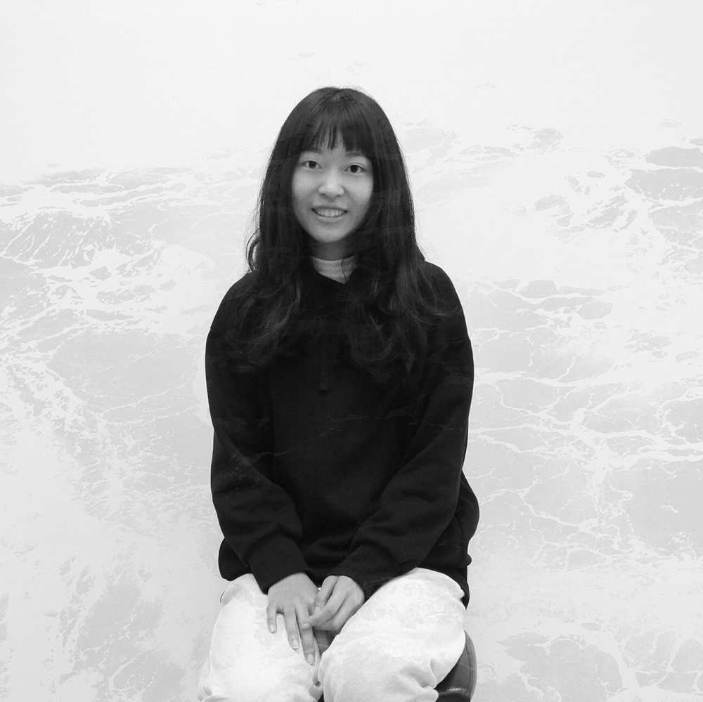

ABOUT ME
周芸卉
Chou Yun-Huei
1997 / 01 / 07
PERSONALITY
{{item}}
您好！我是周芸卉，可以稱呼我為Yuni😊👋
如果要用一件事來代表我的話，一定是我對於喜愛事情有熱情的執著吧！我可以在假日的下午、下課後的晚上，一個人在電腦前敲敲打打一整天，怎麼樣也不會膩。
自我學習能力讓我可以學會解決問題。隨著合作經驗慢慢的累積，在團隊中我可以很好的整合跨領域技能。我喜歡充滿創造力的發想，喜歡溝通的激盪！也期待在未來也能夠繼續完成一個個精彩的專案。
#
我擅長創造互動性高的動態效果網站，喜歡讓使用者為之一亮的小驚喜。目前致力於培養程式的邏輯與深入資料結構，已經可以讀懂大型Document，並且進行應用。我擁有很高的執行力，喜歡每月給自己學習的目標。

熟悉程度表 Familiarity
熟悉以AJAX進行API的串接，平常習慣是以AXIOS進行請求。會將他人的技術文章整理成書籤，也在遇到困難時將解決方法在HackMD上做紀錄。之後想開始寫技術性部落格，回饋自己從前輩身上得到的知識。
NEXT STEP
未來會逐漸轉換成使用Vue3。未來希望可以透過學習Node.js，用Express製作SSR的網站。
#
Other Competencies
其他技能EDUCATION
2019
2021
碩士學位
國立臺北科技大學互動設計系研究所
2015
2019
學士學位
國立臺灣藝術大學 視覺傳達設計系

2021 English / TOEIC Reading & Listening 900
EXPERIENCE
2015
2019
北科大互動所 使用者經驗與介面設計實驗室 研究助理
北科大實習系統設計、國立公共資訊圖書館兒童尋書APP
2020
October
TAICHI 2020 Visual Designer Agenda Programer
Taiwanese association of Computer-Human Interaction annual conference
2020
October

放視大賞 - 行動軟體應用企劃組 金獎
2019
October

金點新秀設計獎數位多媒體類
2017
2018
104級 台藝大視覺傳達設計學系系學會 會長